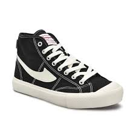
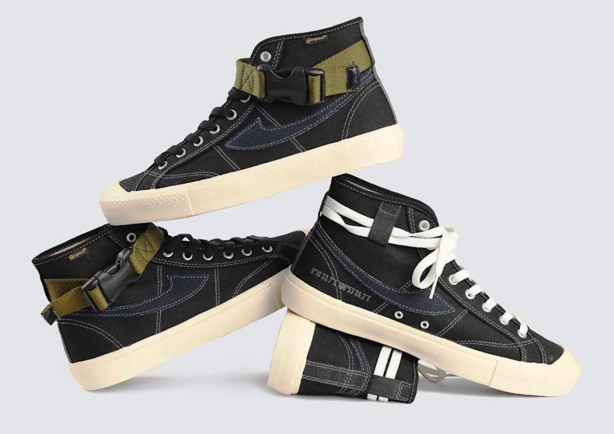
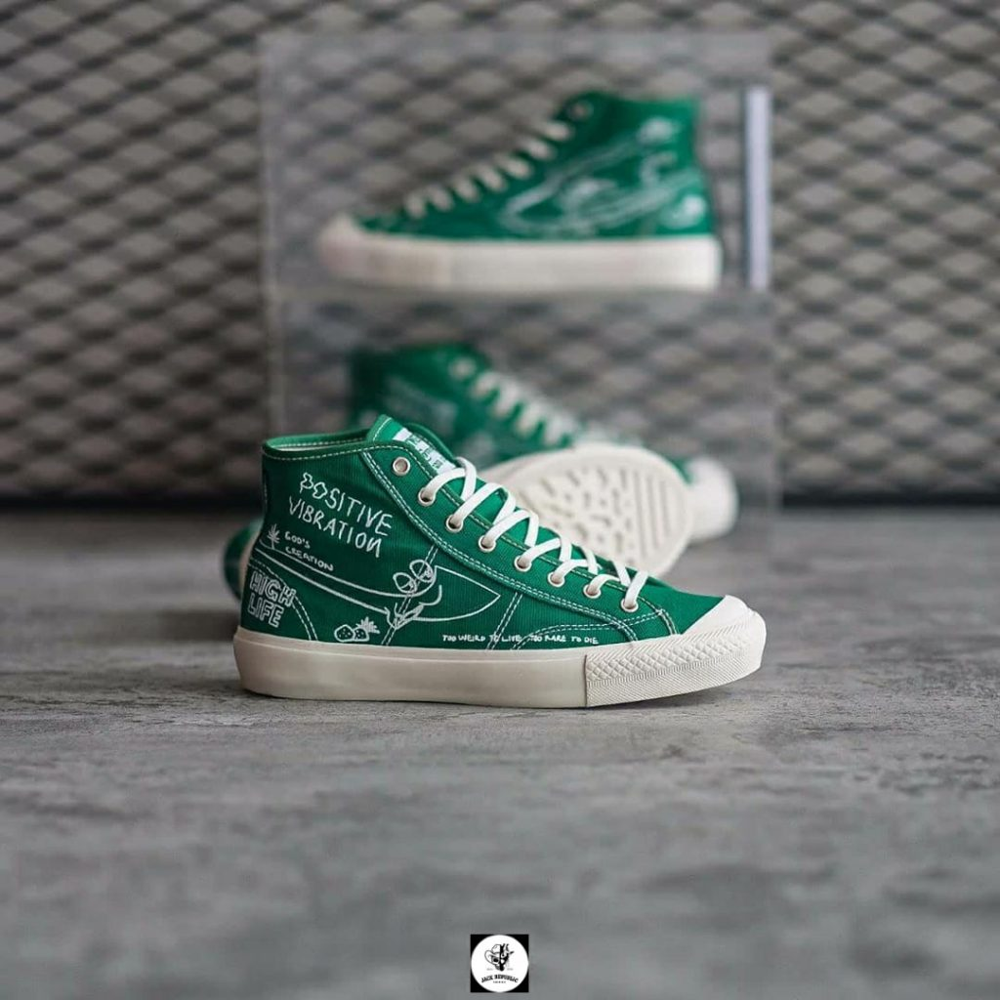
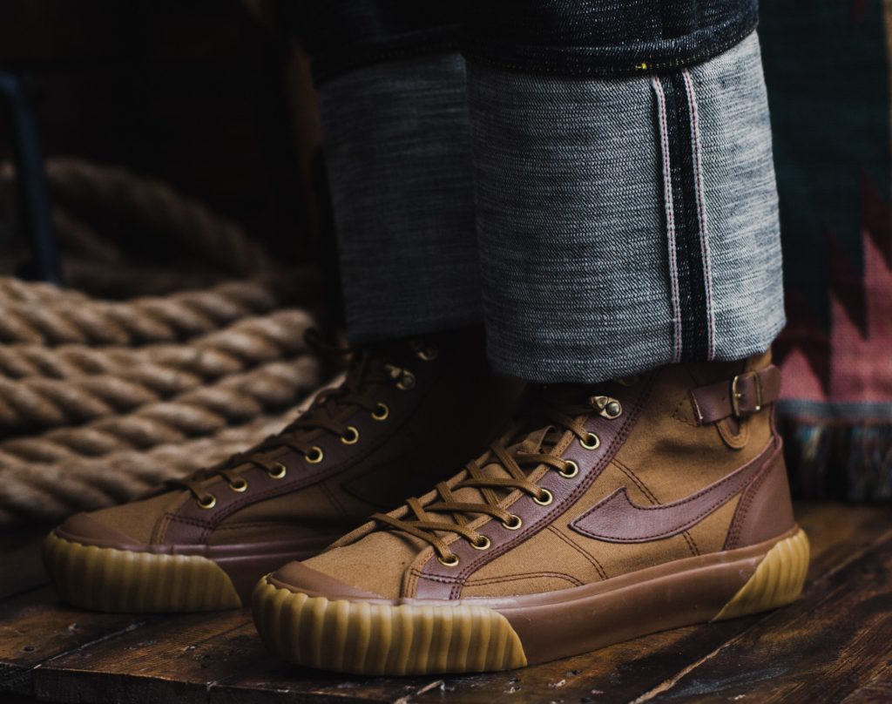

Sejarah dan Awal Kebangkitan
Apa itu Sepatu Compass?
Awalnya Sepatu Compass ini merupakan brand Gazelle Sport yang berdiri pada tahun 1988 oleh Alm. Kahar Setiadi dibawah naungan PT. Kompas Mas. Lalu pada tahun 1998 didirikanlah Sepatu Compass oleh anaknya yaitu Bapak Ir. Kahar Gunawan, MM.
Namun, Compass sempat mengalami keterpurukan pada tahun 2000an. Alasannya karena minat masyarakat yang cenderung ke produk impor.
Sepatu Compass lalu mulai bangkit pada Agustus tahun 2018 lewat model yang direbranding oleh Aji Handoko Purbo dengan siluet Gazelle, Bravo 001, Proto 1 "Research & Destroy" & 98 Vintage yang begitu digemari oleh semua kalangan, baik millenial hingga orang tua.
Kolaborasi Sepatu Compass Yang Banyak Diburu
Compass Bravo
Di tahun 2019, sepatu Compas mengeluarkan seri terbarunya, yaitu Compass Bravo. Seri ini merupakan hasil kolaborasi Compass dengan seorang influencer Brian Notodiharjo atau yang dikenal dengan sebutan Briant. Compass Bravo kental dengan nuansa militarian, ini tampak dari extra buckle berwarna hijau army yang ada di bagian atas sepatunya.
Compass seri Bravo ini hadir dengan satu tipe saja, yaitu high. Untuk harganya sendiri sepatu kolaborasi ini dibandrol dengan harga sekitar Rp398 ribu dan hanya diproduksi 100 pasang saja.
Compass Bravo
Ini menjadi Seri Compass yang paling banyak diburu oleh para sneakerhead. Terbukti dari membludaknya antrean saat peluncuran Compass x PMP di Grand Indonesia akhir tahun 2019 lalu. Compass x Pot Meets Pop merupakan salah satu hasil kolaborasi untuk Darahkubiru. Darahkubiru sendiri merupakan komunitas denim terbesar yang ada di Indonesia.aitu Compass Bravo. Seri ini merupakan hasil kolaborasi Compass dengan seorang influencer Brian Notodiharjo atau yang dikenal dengan sebutan Briant. Compass Bravo kental dengan nuansa militarian, ini tampak dari extra buckle berwarna hijau army yang ada di bagian atas sepatunya.
Compass x PMP ini memiliki desain yang sangat unik, dengan hijau cerah sebagai warna dasarnya dan dihias ilustrasi doodling di seluruh bagian sepatu. Sepatu kolaborasi ini hanya diproduksi dengan satu tipe saja, yakni Gazelle high. Untuk harganya sendiri, Compass x PMP dibandrol dengan harga Rp518 satu pasangnya.
Compass x Oldblue.co
Selain Compass x PMP, Compass seri Darahkubiru juga mengeluarkan kolaborasi lainnya, yaitu Compass x Oldblue.co. Ini merupakan hasil kolaborasi sepatu Compass dengan brand denim lokal.
Di desain oleh Oldblue.co, sepatu kolaborasi ini memiliki model tinggi (high cut) dan berwarna cokelat. Siluet sepatu yang dijadikan kolaborasi mengambil base dari Compass 98 Vintage. Sepatu ini memiliki model klasik premium yang terinspirasi dari engineered boots. Selain modelnya yang terbilang sangat maskulin, Compass x Oldblue.co juga diberi detail kecil yang menarik seperti oramen kulit, gold eyelet (lubang tali sepatu), serta hook.
Sepatu kolaborasi Compass x Oldblue.co ini dibandrol dengan harga Rp698 ribu dan hanya diproduksi dengan jumlah yang sangat terbatas.